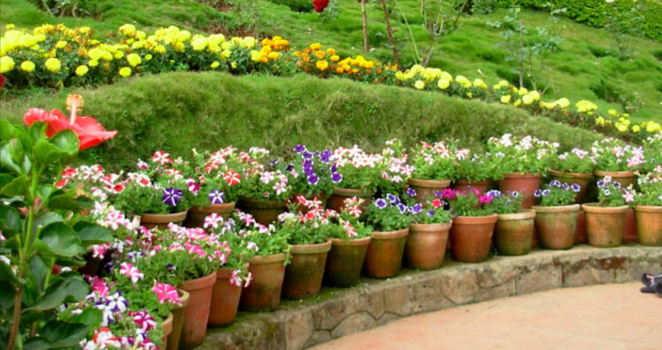
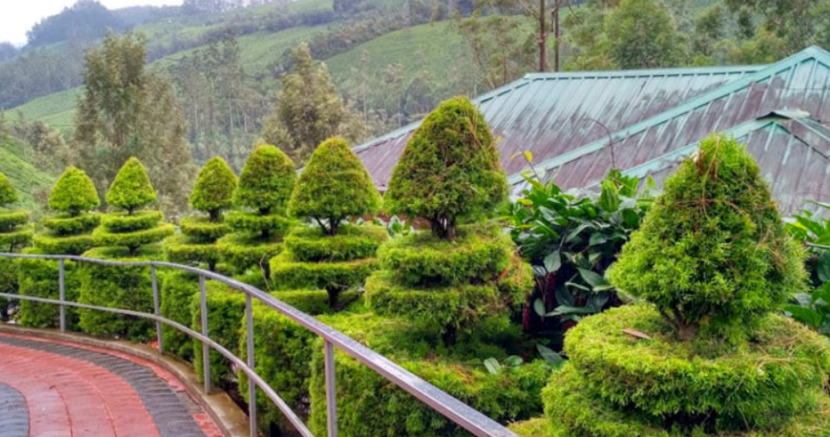
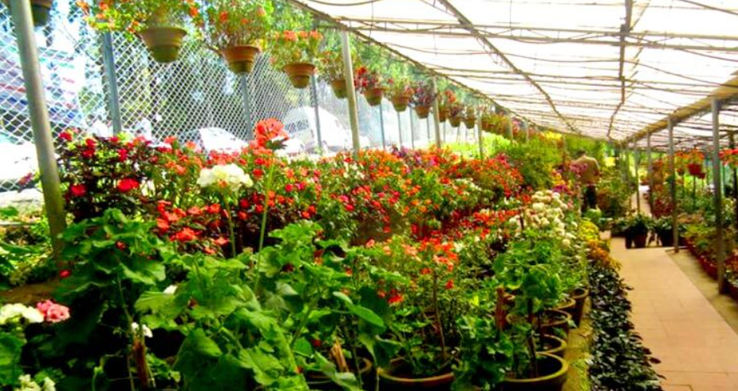

KFDC Floriculture Centre is a beautiful flower garden located near Munnar in Idukki district, Kerala. Managed by the Kerala Forest Development Corporation (KFDC), the garden is famous for its colourful flowers, ornamental plants, and well-maintained landscape. Visitors can enjoy a peaceful walk while admiring the beauty of various flowering plants and decorative shrubs.
The floriculture centre also offers a pleasant view of the surrounding hills and greenery, making it an excellent place for photography and relaxation. Different species of flowers bloom throughout the year, attracting nature lovers and tourists. KFDC Floriculture Centre is an ideal destination for families, students, and visitors who wish to experience the colourful beauty of Munnar.



KFDC Floriculture Centre is one of the most beautiful tourist attractions in Munnar, Idukki District, Kerala. Managed by the Kerala Forest Development Corporation (KFDC), the garden is famous for its colourful flowers, ornamental plants, medicinal herbs, orchids and beautifully landscaped gardens. It is a favourite destination for nature lovers and photographers.
The KFDC Floriculture Centre was established by the Kerala Forest Development Corporation to promote eco-tourism, plant conservation and environmental awareness. Over the years, it has become one of the most visited gardens in Munnar.
The centre displays hundreds of varieties of flowers, orchids, cactus plants, bonsai, medicinal herbs, ornamental shrubs and rare plant species. Beautiful walking paths and scenic viewpoints make it a perfect place for relaxation and photography.
The garden contains orchids, roses, cactus, flowering plants, medicinal herbs, spice plants, ornamental trees and many native species of the Western Ghats. Visitors can also purchase plants and seeds.
Today, KFDC Floriculture Centre is one of Munnar's leading eco-tourism attractions. It attracts thousands of visitors every year with its colourful flower displays, educational exhibits, plant collections and peaceful atmosphere.